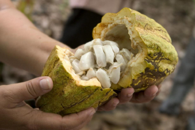

Quelle est la recette de ce mets tant convoité ?
Avant toute chose, il faut savoir que le chocolat que tout le monde connait en tablette ne l'ai pas directement.. Celui-ci se fabrique et autant vous dire que sa fabrication n'est pas simple.
Le chocolat est composé d'un ingrédient principal: à partir de fêves de cacao. Ces fêves sont contenues dans une cabosse qui pousse sur le tronc d’un arbre : le cacaoyer ou kolatier ou encore du cupuaçu. Cet arbre est rare et ne pousse que dans différentes zones équatoriales d’Amérique, d’Afrique et d’indonésie. Voici-ci les 11 étapes qui feront de cet ingrédient une délicieuse gourmandise ou une angoisse pour vos kilos en trop.
2ème étape : L’Ecabossage
Il faut attentre environ 3 jours après la récolte avant d'ouvrir les cabosses grâce à un couteau afin de séparer à la main les fêves de cacao de la pulpe blanche. On dénombre de 16 à 60 fêves par cabosse. 3ème étape : La Fermentation
Un jour après l'écabossage, l'objectif est de stopper le processus de germination de la fêve et donc d’améliorer un maximum la conservation du fruit. Les fèves sont alors stockées durant une semaine dans de grands paniers en bois. Chaque panier contient environ 100kg de fêves et sera brassé toutes les 24 heures.4ème étape : Le Séchage
Pour stopper le processus de fermentation, il faut impérativement que les fêves de cacao soient séchées pendant 1 à 4 semaines. Par la suite, elles seront disposées sur de grandes bâches en plein soleil et remuées de temps en temps. Afin d’aller les plus vite, certains industriels optent pour une technique moins naturelle: Ils utilisent des fours thermiques qui chauffent les fêves durant 2 bonnes journées. Ensuite, une fois que les fêves sont bien sèches, elles vont être stockées dans des grands sacs en toile de jutte. Et enfin, elles seront exportées vers d'autres pays qui se chargeront de transformer les fêves en chocolat.
5ème étape : La Torréfaction
Dès que les fèves arrivent sur un autre continent, elles sont nettoyées et chauffées pendant une 1/2h à une chaleur de 100° à 140°C selon le cacao afin de développer l’arôme du chocolat. Ces arômes dépendent essentiellement des précurseurs nés lors de la précédente phase : la Fermentation.6ème étape : Le Décorticage
Une fois les fêves torréfiées, elles sont grossièrement broyées afin de séparer les morceaux de coques des germes par une technique de ventilation/vibration. En fait, comme les morceaux de coque sont plus légers, ils s’envolent tandis que la fève plus lourde, elle ne bouge pas.Il faut savoir qu'une fêve de cacao est composée de 50% de matière grasse aussi appelée beurre de cacao; 3, 5 % d’eau; 7 % d’amidon; 4 % de cellulose (glucose); 2 % de théobromine (composé amer), 20 % d’autres protéines et 6 % de substances minérales.
7ème étape : Le Broyage
Les graines de cacao arrivent ensuite dans différents broyeurs qui varient selon l’affinage souhaité. Le résultat de ce broyage est une pâte épaisse et liquide appelée masse de cacao.